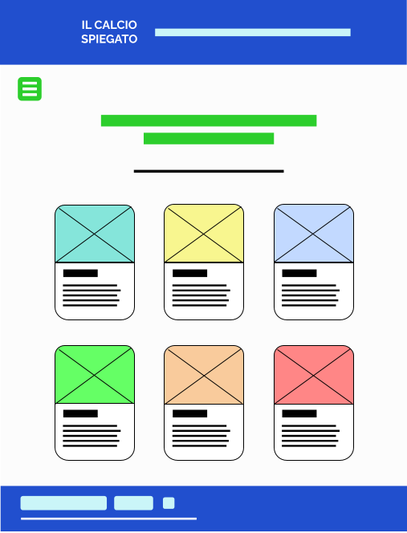
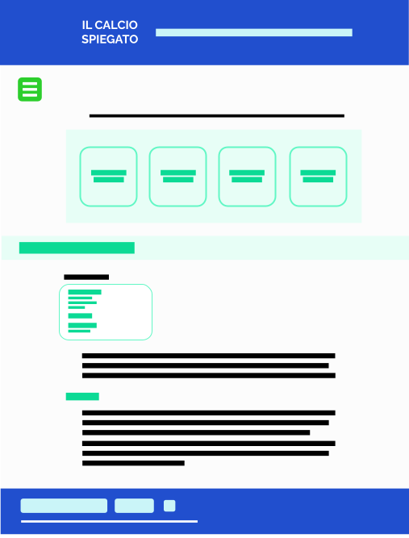

Project Management Plan
Benchmarking
Obiettivi
L’obiettivo principale del sito è quello di mostrare una panoramica su tutti gli aspetti del mondo del calcio soprattutto quelli che solitamente vengono solitamente dati per scontati.
Target utente
Il sito si rivolge a chiunque non conosca il calcio o ne conosca poco.
Competitors
Alcuni dei siti simili a Il Calcio Spiegato esistenti in rete sono:
- www.calcio-giocato.com è un sito realizzato dall’azienda Snai che tratta e approfondisce diversi aspetti del gioco del calcio e della sua storia sottoforma di articoli e non fornisce solo informazioni di base ma anche letture per appassionati. Utilizza un linguaggio a volte tecnico che dà per scontate alcune nozioni.
- www.rivistaundici.com è il sito dell’omonima rivista bimestrale che fornisce notizie e articoli di approfondimento sul calcio. Si rivolge a persone che sono già appassionate di calcio e mira a creare contenuti di qualità usando un linguaggio alto.
- www.ilcalcioillustrato.it è il sito collegato all’omonima rivista mensile realizzato dalla Lega Nazionale Dilettanti e offre notizie e articoli per gli appassionati e gli addetti ai lavori che fanno parte del mondo del calcio dilettantistico.
Inoltre in rete ci sono molti articoli che riguardano le basi del calcio su vari blog generalisti e wiki. Ma questi non sono siti interamente dedicati a questo argomento.
Struttura e Layout
Architettura
1.

1. Architettura del sito: il sito si articola in quattro pagine principali che rappresentano macrocategorie, ognuna è poi divisa al suo interno in diverse sezioni che arrivano man mano agli argomenti più specifici.
Wireframe
2.
2. Wireframe della home page
3.
3. Wireframe delle pagine interne
Look and Feel
Il logo del sito è stato realizzato con un software di grafica vettoriale. I font scelti sono "Raleway" per i titoli e "Open Sans" per i contenuti più lunghi. Sono due font molto semplici e leggibili che rispecchiano il linguaggio semplice utilizzato per i contenuti. Anche la grafica del sito è molto semplice con l’utilizzo di colori a tinta piatta. I colori dell’header e del footer sono un blu (#214FCE) e un celeste (#CAF5F8) e sono ripresi sia nel menù che nel bottone "go-to-top". Tutti gli altri colori utilizzati seguono l'idea generale di pulizia e semplicità.
Vengono utilizzati dei bottoni che cambiano graficamente al passare del mouse per evidenziare la possibilità di cliccare ed essere indirizzati a una sezione specifica. Sono state usate delle icone nel menù per distinguere meglio le varie pagine. L’intero sito ha quindi uno stile essenziale poiché il progetto si basa sulla chiarezza: spiegare con un linguaggio semplice gli elementi fondamentali del calcio.
Linguaggi e strumenti
Linguaggi
I linguaggi utilizzati sono stati HTML, CSS e Javascript (limitatamente al bottone "go-to-top").
Strumenti tecnologici
Per realizzare il sito ho utilizzato: il software Gravit Designer per realizzare alcune immagini e il logo del sito, Sublime Text 2 come text editor, Fontawesome per le icone, Bootstrap per i bottoni e l’impaginazione, Google Fonts per i font, Google Analytics per rilevare le statistiche del sito, Github per la pubblicazione.